Docker概述
从init谈起
Linux系统下有3个特殊的进程:
- idle进程: 由 操作系统自动创建，运行在内核态，pid为0。
- init进程: 由 idle通过kernel_thread创建，pid为1，在内核空间完成初始化后，加载init程序(现在大多系统使用的是systemd程序，稍早的系统使用sysvinit或者upstart程序)，并最终在用户空间运行。
- kthreadd进程: 由 idle通过kernel_thread创建，pid为2，始终运行在内核空间，负责所有内核线程的调度和管理。
我们现在关心的是init进程。
使用htop命令打开系统的进程查看，会发现init的pid为1：
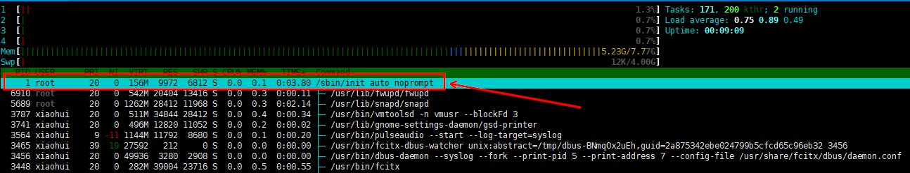
在不同版本的操作系统下，init所指向的启动程序有所不同，在之前版本的操作系统中，使用的是 sysvinit 或者 upstart 程序，现在版本大多使用的是 systemd。idle进程在启动时，会在 /sbin、/etc、/bin 三个目录下搜索 init 程序，如果都没有，则会使用 /bin/sh 作为 init程序，如果还是没有，则启动失败。具体可以查看内核代码 kernel_init。
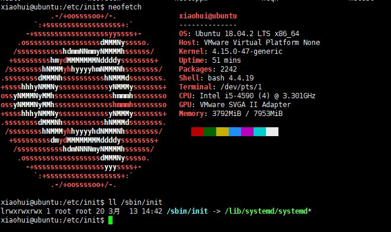
如上，在 Ubuntu 18.04 系统中，使用的是 systemd 作为init程序。
init进程 是linux内核启动的第一个用户级进程，是其他所有进程的父进程(2号进程及其下子进程除外)，它可以创建子进程，子进程又可以创建出子孙进程，形成一个 树状的进程网络。
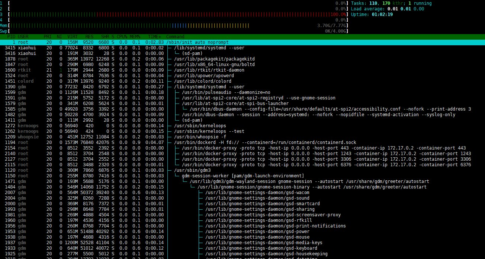
同时 init进程 也负责 孤儿进程的资源回收。
在 Docker容器 中，启动的第一个进程被分配了pid为1，也是需要实现类似init的功能，维护所有后续启动进程的运行状态。
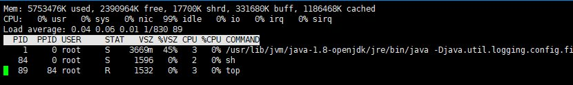
如上，在docker内可以看到，tomcat容器启动时调用的是java，并将其作为 1号进程。
Docker架构
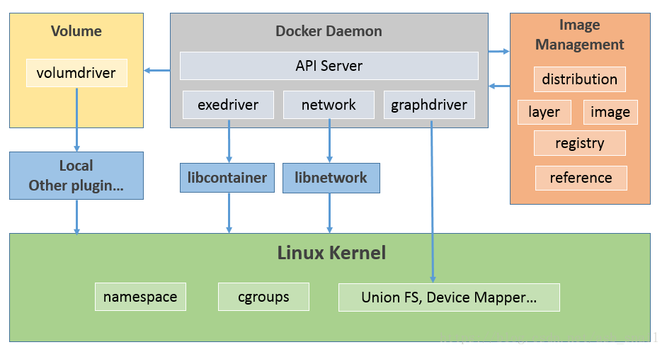
Docker使用了传统的 client-server架构模式，用户通过 Docker client 与 Docker Daemon 进行通信，并将请求发送给后者。通过 server端 的 API Server 解析传来的信息，并将命令分发给不同的模块进行操作。
可以通过 docker version 命令查看系统上的docker版本信息。
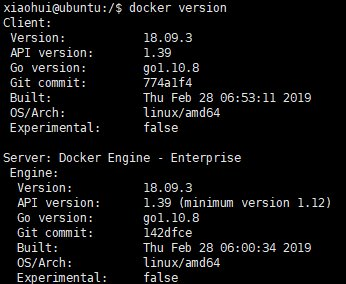
docker client 的种类非常丰富，涵盖了Java、Go、Ruby、Python等，API server 含有一套详细的接口，只要调用相关的接口就能使 docker服务端 完成对应的任务。
Docker镜像是一个 只读的Docker容器模板，含有启动Docker容器所需的文件系统结构及其内容。
怎么理解呢？如果把Docker镜像当作一个类，那么Docker容器就相当于是 镜像创造出来的实例。
Docker镜像是Docker容器的静态视角，Docker容器是Docker镜像的运行状态。
在介绍 Docker Image 之前，要首先知道一些概念。
rootfs 、 union mount 和 copy-on-write
在Linux操作系统内核启动时，内核首先会挂载一个只读(read-only)的rootfs，当系统检测其完整性之后，再将其切换为读写模式(read-write)，或者最后在rootfs之上挂载一种文件系统并忽略rootfs。
Docker架构下，也是采用了rootfs的思想。
- 当 Docker Daemon 为 容器 挂载 rootfs 时，会将其设置为 只读模式(read-only)。
- 在rootfs挂在完后，Docker Daemon 并没有将 rootfs 设置成 读写模式(read-write)，而是使用 union mount(联合挂载) 技术，在 只读的rootfs 之上再挂载一个 读写模式(read-write) 的文件系统。
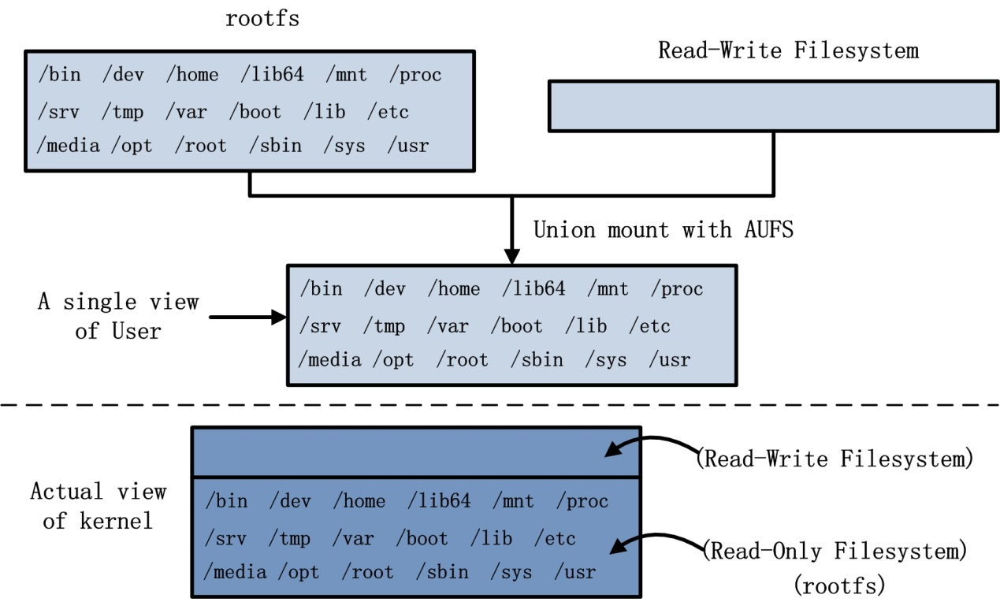
如上图所示，使用 union mount技术 的好处在于：
- 在系统角度上看，会 在原本的rootfs基础上挂载一个可读可写层，容器运行时对文件的改变都是在这个可读可写层上操作。
- 而对于用户来说，并不知道这个可读可写层的存在，仍是像操作普通文件系统一样操作容器。
当用户对容器文件产生修改时，采用的 COW(copy-on-write) 特性，会 只在读写层进行修改，而 不去修改rootfs中的内容。
例子
可以使用 inspect 命令查看容器的详细信息。
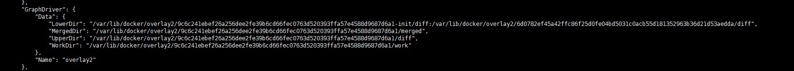
可以看到，该容器运行时的根目录是在 /var/lib/docker/overlay2/9c6c241ebef26a256dee2fe39b6cd66fec0763d520393ffa57e4588d9687d6a1 下。其中的以 init结尾的文件夹 中存放的是 容器启动时，根据系统环境和用户配置自动生成的具体内容，包括Dns配置等。
默认情况下，docker运行相关的文件都存放在 /var/lib/docker/ 目录下。
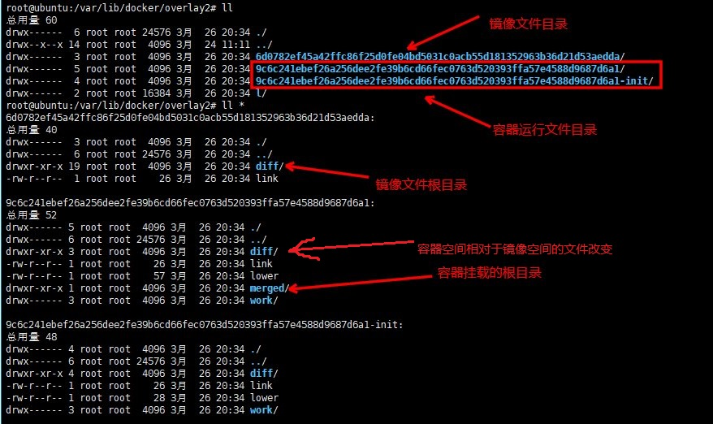
在对容器文件进行修改时，也只是在可读可写层进行修改，而不会影响到镜像层的文件。
但当修改镜像层文件时，就要分两种情况了：
- 容器层未对A文件进行修改：修改了镜像层的A文件，容器层的A文件也进行了修改。
- 容器层对A文件进行过修改：容器层已经对A文件在可读可写层进行了拷贝，修改了镜像层的A文件，容器层的A文件不会发生改变。
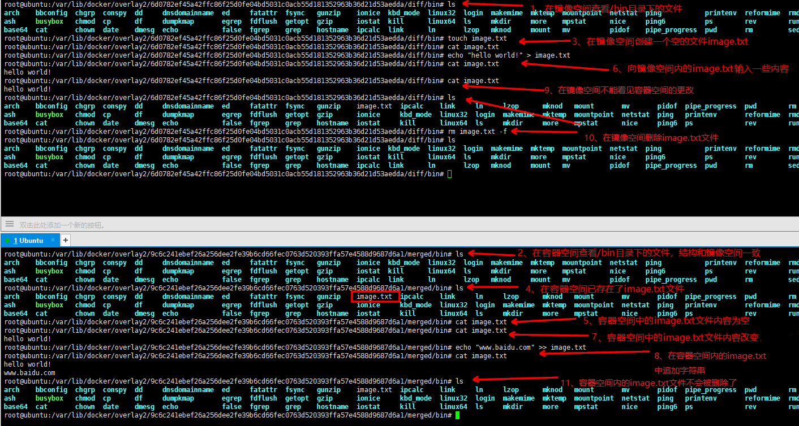
Docker Image
现在来看image，就十分的清晰了。
我们知道，Docker的镜像可以以其他镜像为基础镜像来构建。和容器与镜像一样，子镜像与基础镜像之间 也采用了 union mount 技术。正常我们构建的镜像的rootfs，由多个镜像的rootfs组合而成。
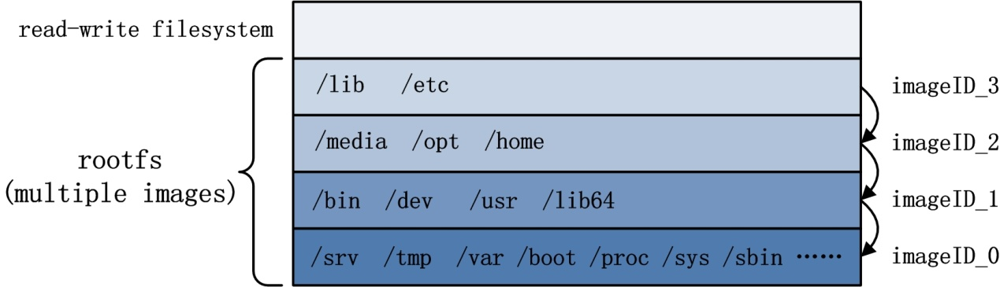
例如，我们采用下面的Dockerfile创建一个镜像：
FROM alpine
RUN mkdir /data
镜像的内容很简单，只是在 基础镜像alpine 的基础上，新建了一个 /data 目录。
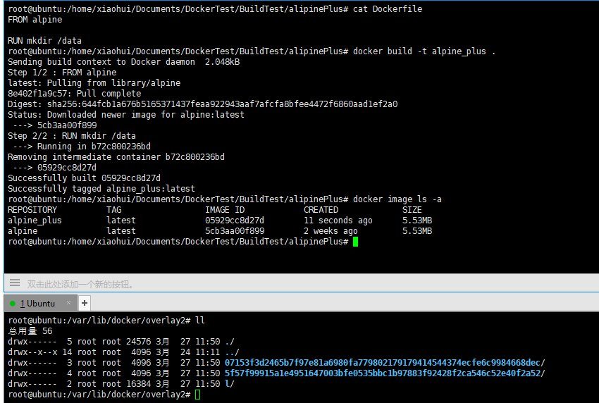
使用 inspect 命令查看新镜像的信息。
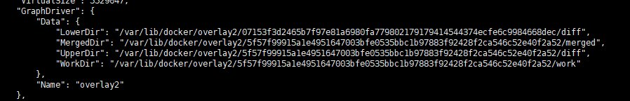
可以看到 LowerDir 为基础镜像的路径，UpperDir 为新镜像的更新路径，也就是说，会在该路径下，看到 /data 目录。
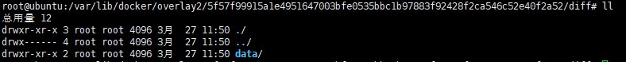
Docker Container
上面主要在 Docker Image 的层面上介绍了Docker以及 镜像和容器的部分关系。下面详细说下 容器(container)。
我们可以 使用 Docker 创建 Docker Containe(容器)，然后在容器内部运行进程。
实际上，容器也是一个“进程”，它由 Docker Daemon 创建出来的子进程，然后使用 资源隔离(namespace) 和 资源限制(cgroup) 等技术，将 容器进程 与其他进程相隔离。相应的步骤如下：
- (1) 父进程通拓fork创建子进程时，使用namespace技术，实现子进程与其他进程(包括父进程)的命名空间隔离，隔离的命名空间包括：PID、用户组、进程间通信、文件系统、网络、域名；
- (2) 子进程创建完成后，使用cgroup技术来处理子进程，实现子进程的资源隔离，资源包括：使用的内存大小、使用的CPU优先级等等；
- (3) 系统在子进程所处namespace内部，创建需要的隔离环境，如隔离的网络栈等；
- (4) 进程所处的 隔离环境 创建完成， 容器 诞生。
现在上面的那句话 "使用 Docker 创建 Docker Container（容器），然后在容器内部运行进程" 可以解读为 使用Docker创建一个子进程，使用namespace和cgroup等技术为该子进程创造隔离的环境，这样的环境可以成为 容器(container)，我们可以在容器内部运行用户应用程序。
正如开头所说的，类似于 Linux下的init进程，由 Docker Daemon 创建出来的 第一个子进程 也将作为新容器内的 "init进程"。而 Docker Daemon 则相当于 idle！
由于命名空间的原因，甚至可以 在容器内再创建新的容器，新容器依赖的环境不再是宿主机器，而是上一层的容器。
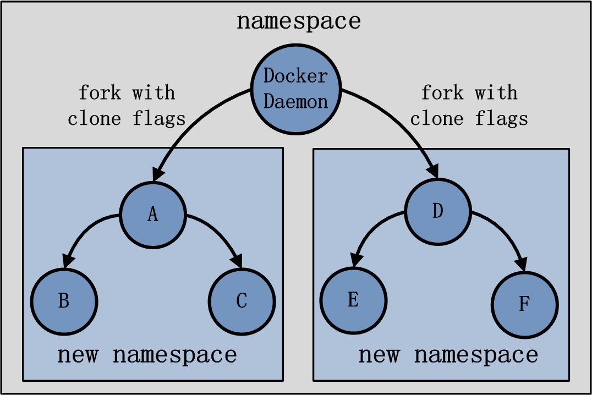